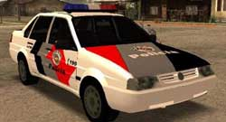

Olá candidatos do concurso para Soldado da PM do Estado de São Paulo. Um dos colegas leitores do Caso de Polícia nos enviou as últimas provas do concurso da PMSP, dos anos de 2008 e 2009, para ajudar quem queira estudar para o próximo concurso, talvez até esse ano mesmo, 2011.

Agradeço ao Rodrigo Cunha por compartilhar com os demais leitores e interessados.Para baixar a prova e gabarito do concurso da Polícia Militar ano 2008 clique aqui.
Para baixar a prova e gabarito do concurso da Polícia Militar ano 2009 clique aqui.
Lembrando que outras provas de concursos anteriores também podem ser baixadas gratuitamente aqui no CdP. Bons estudos.